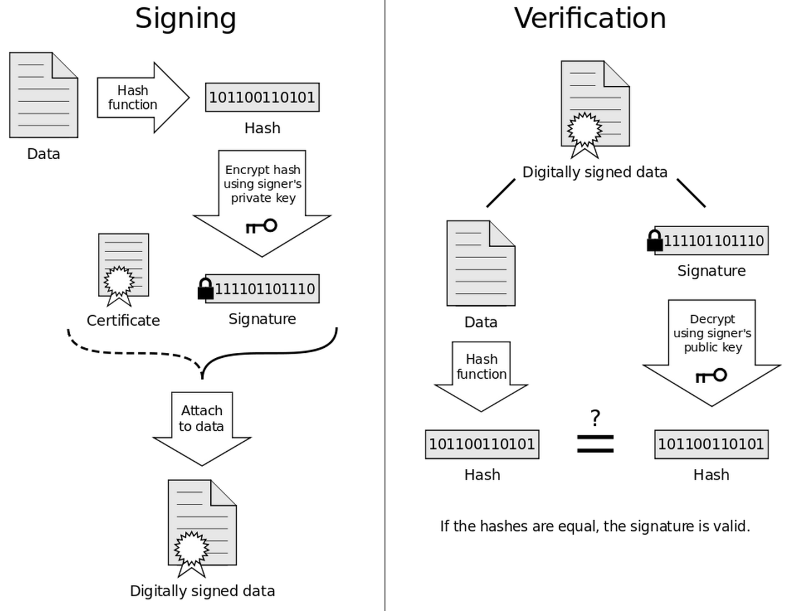

Confidentiality
Accounting Architecture

Confidentiality is the next Control block in the Accounting Architecture. It comprises more than one pillar of the Trust Services Framework. Additionally, it is not fundamentally separate from the principles of Security. As a result, many tools that preserve confidentiality are common referred to as security tools.
Trust Services Framework
The two pillars in the Trust Services Framework that the Confidentiality block comprises are Confidentiality and Privacy. The AICPA explains the difference between these two terms. “Confidentiality is distinguished from privacy in that privacy deals with personal information whereas, confidentiality refers to a broader range of information that is not restricted to personal information.” From this explanation it is clear that the same tools protect privacy and confidentiality.

Security and Confidentiality
As it does with the other pillars of the Trust Services Framework, security plays a role in promoting confidentiality. In fact, a primary focus of security (i.e., access controls) is to keep data confidential. Although permissions and authentication also prevent unauthorized changes to data, as evidenced by the publicity surrounding corporate data breaches and the leakage of, for example, customer data, companies focus permissions, authentication, and hardening on avoiding unauthorized viewing of data.
Confidentiality and Compliance
Especially as it pertains to the “privacy” side, Compliance is particularly applicable to the Confidentiality block of the Architecture. Much of the concept of compliance is familiar to accountants because so much of the profession revolves around regulatory compliance (e.g., GAAP, IFRS, IRC). However, compliance also includes the laws and private contracts that dictate the protection of trade secrets, customer data, intellectual property, etc.
Confidentiality
Information designated as confidential is protected as committed or agreed.
Three tools commonly serve to keep information secret:
- Rights management avoids unlicensed use of intellectual property.
- Intermediation anonymizes communication.
- Encryption prevents reading sensitive content, especially in transit.
Rights Management
Intellectual property licenses dictate approved use of licensed content. Maintenance of rights metadata prevents authorized access and ensures prompt deletion of content with expired licenses. Also, rights management is inherently a required compliance activity when using licensed content.
Intermediation
The concept of intermediation is not unique to digital communication. Any time that one party interacts with another via a middleman, intermediation has occurred. This is not a perfect analogy because the purpose of these middlemen is not always to anonymize interactions. For example, information intermediaries, such as analysts, communicate information regarding firm performance to investors; financial intermediaries funnel funds from one group to another. In the case of analysts, anonymity is not an issue, and for financial intermediation, only sometimes is the intent to preserve anonymity, frequently it is simply for convenience.
Review of the WAN
In order to access Internet (i.e., WAN) resources, a device must have a public IP address. Although this address may differ from the IP address that a computer reports for itself, it is the address that the device uses to communicate on the WAN. Similar to the premise of caller ID, when a computer accesses an Internet resource (e.g., a Web site), the server that hosts that resource records the public IP address the client computer. This record exposes some aspects of the identity of the user because the public IP can be traced to the geographical location of the client.
Proxy Servers
Unlike intermediaries that serve to make the transmission of information or money more efficient, proxy servers serve as intermediaries between a user's ISP and an Internet server to change the client's public IP address. The client selects and connects to a proxy server. While connected, the proxy server forwards all Internet requests to the server and content to the client. The server records the IP address of the proxy server, instead of the client. Because the server records the IP address of the proxy server, any attempt to determine to identify the location of the client would prove fruitless, as the proxy server may be in a different part of the world as the actual client.
Why Hide?
Hiding the client's public IP address has a number of advantages. On the less nefarious side of things, the user can access resources that are restricted to a particular country. For example, a US IP address is necessary in order to stream the Netflix content that Americans expect to find. Using a US-based proxy server will provide a client outside the US with a US IP address. On the more nefarious side of things, proxy servers can allow perpetrators of illicit activities (e.g., hacking, sale or purchase contraband) to evade detection. Corporations often use them to anonymize traffic from the devices inside their LANs.
Bring to Light
Corporations also use proxy servers for two other reasons. First, if users inside a corporate LAN need to access the same WAN resources (e.g., a Web site) frequently, the proxy server can create a cache (i.e., a temporary copy) of that resource so that the clients can access it more quickly. Second, although a proxy server can hide the IP address of the client from the Internet server, the proxy server itself records the IP address of the client, as well as the traffic to and from the client. This provides the corporation an easy method to track which Web sites their employees have accessed.
Proxy Servers and Firewalls
A firm can use a firewall to keep remote users away from a server, but they can also use a firewall to keep LAN users from accessing remote servers. For example, if a university wanted to prevent its employees from accessing social media sites, a firewall could block access to these sites from university computers. Proxy servers can circumvent these restrictions because to the university's firewall the client only accessed a proxy server, not a social media site.

VPN
Virtual private networks are similar to proxy servers in that they serve as an intermediary between a client and Internet servers. However, VPN servers have a particular advantage over proxy servers, and that is that VPN servers encrypt the communication with the client. This prevents eavesdropping by unauthorized third parties. VPN is a popular tool for teleworking. If the VPN server is part of an organization's LAN, then a client connecting to the VPN from the WAN can access LAN resources, such as private clouds, as if that client were inside the LAN, hence the name “virtual private network” because it simulates being connected to a private network. VPN servers are also popular for secure use of public WiFi networks (e.g., coffee shops).
Encryption
Unauthorized eavesdropping on network communication is a problem because the standard for network communication is plain text.
Secure Shell
Some popular forms on communication rely on encryption. Secure Shell (SSH) allows remote access of a single computer using an encrypted connection. This is the current standard for accessing the command line of another computer, although it is also possible to tunnel graphical content through SSH. SSH is commonly considered a secure alternative to telnet, which historically was the standard for communication between two computers.
Encryption
Permissions, authentication and hardening serve to prevent unauthorized access to sensitive content. However, in at least two situations, these are not sufficient. The first is if an unauthorized user gains physical access to a digital asset. The second is in the case of digital communication because these tools cannot protect a message in transit. In these two settings, encryption is necessary to prevent unauthorized users from reading data by using an encryption algorithm (i.e., key) to turn plain text into unreadable cypher text. In order to render the data useful, a recipient must either have, or guess, the decryption key.
What is a Key?
An encryption or decryption key is nothing other than a sequence of characters that determines a transformation of plain text to obtain cypher text. For example, drafting cypher text that relies on shifting the letters in the alphabet by one is an example of encryption using a key. The only difference is that guessing enterprise-grade encryption keys can take years, or even lifetimes.
Zydeco's unbreakable. It's a four kilobyte code. No, an algorithmic code that takes up four kilobytes of space is beyond secure. No, it would take longer than the whole life of the universe to crack it. That's impossible.
Two Forms of Encryption
Encryption keys can either be symmetric or asymmetric. In symmetric, or private, key encryption, the encryption and decryption keys are the same, and both the sender and the recipient must have the same key. In asymmetric, or public, key encryption, the key to encrypt the data is publicly distributed and a paired private key is used for decryption. Public key encryption is secure so long as users keep their own private keys secret because, although users share their encryption keys, it is not feasible to infer the private decryption key from the public encryption key.
Public Keys in Action


Cryptographic Hash
In both symmetric and asymmetric encryption, the encryption algorithm is reversible in order to render the cypher text readable. Cryptography also serves to create hashes, which are not reversible. Although it may seem useless to have un-decrpytable cypher text, these hashes actually serve important roles. One role is the verification of data integrity. Because the hash of any digital content will change if the underlying data is modified in any way, a hash can confirm that a message was not modified in transit. This is frequently used to verify that the integrity of a downloaded file.
Digital Signature
Another important role of hashes is to verify the identity of the sender of a message. Unlike verifying data integrity which uses a universal encryption key (e.g., MD5 or SHA) so that every user would obtain the same hash from the same data, digital signatures rely on unique private keys from asymmetric key encryption. The signature is a hash of the message using the sender's private key. If the sender's public key creates a hash that is the same as the hash of the message, then the identity of the sender is verified.
Again, With Pictures
Crypto-currency
Bitcoin, and other related forms of digital currency, rely on these encryption tools to create a secure and anonymous source of money. This leaves two questions unanswered. First, how can a computer create currency? Second, how can a group of individuals use cryptography to make a viable method of exchange?
What Is Money?
In order to understand how a computer can create currency, it is necessary to review the three characteristics of money:
- Method of exchange
- Unit of measurement
- Store of value
Given this definition and what we know about money, is not the creation of currency restricted to central banks?
We Make Money All The Time
Of course, anyone can create currency. Any good can meet the three criteria of money. Every time we barter, we create money. The fixation on the US dollar as money (e.g., the Monetary Unit Principle of the FASB's Conceptual Framework) is arbitrary. We only adopt it for tractability and convenience.
That being said, what about digital content? Can binary code create currency?
We already have examples of digital money: Rewards points, PayPal and especially, bank money through the creation of credit. Incidentally, the Euro initially only existed as digital currency.
Credit Creates Money

Brief Intro
Basic Attributes
All transactions are stored in a ledger called the block chain. The ledger is the only manifestation of unspent coins. Because the ledger only tracks transactions, no record of current balances exists. Past receipts become the inputs to a payment transaction as evidence of available balance. Each transaction can have multiple inputs, which may sum to more than necessary. Each transaction can also have multiple outputs, one of which is self-payment of surplus as change. Receipt of change can be used as a subsequent transaction input. By using past transactions as transaction inputs, each transaction is linked to all past transactions in a chain (not the same as the block chain).
Transactions
Bitcoin transactions rely on public key encryption. Each participant in this market must have at least one public key and at least one private key. A payer uses the payee's public key to send coins. The transaction is signed with the payer's private key to prove ownership of the coins. The benefit of public key encryption is that transactions are completely anonymous, but if a private key is lost, all coins associated with that private key become permanently parked.
Updating the Ledger
Transactions are initially stored in a set of unordered transactions because different network nodes can receive transactions in a different order and the timestamp is not trustworthy. Power users select transactions from this set and create a block. This block is added onto the end of the block chain as the next set of transactions for the ledger. The updated ledger is distributed to all network participants.
Benefits of Decentralization
Unlike common banking systems, the Bitcoin ledger is decentralized. This is both benefits and drawbacks.
- Incorruptibility of data: Many copies of the ledger exist.
- Independence: Each participating computer has a complete copy of the ledger and can independently verify the validity of all past transactions.
- Incorruptibility of people: High levels of collusion are necessary to circumvent the system
- Anonymity: No need to register with an authority to participate.
- Freedom: Ability to transact without restriction.
Drawbacks of Decentralization
- No trust: The network is comprised of many self-interested strangers.
- No insurance: No body can address fraud, losses or grievances.
- No authority: No master copy of the ledger.
The lack of a central authority or a master copy of the ledger results in some substantial issues.
Duplicate Chains
Users simultaneously try to add discrete blocks to their own (decentralized) version of the black chain. No central authority or master ledger to settle disputes regarding correctness of one version over another.
Solution: Always build on the longest chain.
New issue: This can result in transactions formerly added to a particular version of the block chain being placed back in the unordered pool.
Duplicate Payments
Transactions are not immediately verified. Nothing prevents a user from including the same prior transactions as inputs to any number of current transactions. As a result, unverified transactions can prove valueless, and even transactions attached to a version of the block chain can prove valueless.
Solution: Only the first verified use of the funds is honored.
New issue: What is the definition of first if transactions begin in and can possible return to an unordered pool? What prevents a user from retroactively modifying a prior transaction to reallocate coins?
BitCoin Mining
The solution to these problems is embedded in the transaction verification, or mining, process. Users select transactions to verify and group them in blocks. The verification process involves having the computer find a hash of the block and the hash value of the previous block that is less than a predetermined number by appending a random, incrementing, non-repeating number (nonce) to the end of the block until the hash value is small enough. Once the correct hash value is found, the "miner" adds this block to a local ledger copy and distributes copies to all other users.
BitCoin Security
The sole purpose for this math problem is to make it non-trivial to verify transactions. The difficulty of the math problem is adjusted as a function of the number of computers processing transaction blocks so that a new block is added at constant intervals. By making each block in the chain a function of the prior block, any attempt to modify a block would require a modification of all subsequent blocks. The difficulty of the math problem coupled with the number of computers continuously trying to find additional blocks makes it impossible for one member to modify an entire section of a chain. A successful attempt would require enough computing power to outpace all other computers on the network combined.
Get Paid
Processing transactions requires significant computing power. Members must receive an incentive to validate transactions. This incentive comes in two forms. Newly issued coins are awarded to the member who finds the next block in the chain. In order to encourage the inclusion of a transaction in a block, senders can also pay a transaction fee. In order to limit the creation of new coins, at some point in the future, the only incentive will be transaction fees.
Mining Pools
Because of the difficulty in solving the math problem, many miners never successfully add blocks.Users can pool computing resources to solve a single block. Rewards are then distributed to members of the pool. Large pools create a risk. The more blocks one pool can add, the lower the ability for independent verification.
Adoption
Hurdles To Adoption
- Volatility
- Cyptocurrency is very thinly traded (illiquid).
- As a result, it is not useful as a unit of measure or a store of value.
- This problem will persist as long as members tend to hoard coins.
- Lack of understanding of the system
- Inability to exchange for fiat currency
- Fear of fraud, especially considering lack of restriction against the issuance of additional coins
- Implicit associations between anonymity and the black market (e.g., money laundering, drug sales)
- Regulatory pressure
Benefits Of Adoption
- Because of anonymity and freedom, it is an excellent method of exchange.
- Some vendors accept bitcoin to allow for digital payment while avoiding credit card fees.
- Vendors may offer discounts on wares for bitcoin payments.
- Transaction fees are at the discretion of the payor.
- Recently, Bitcoin ATMs have surfaced which allow exchange of bitcoins for cash.
- Notarization through the block chain.
How To Join Bitcoin
- Anyone can participate in the Bitcoin network.
- Get a wallet (web-based, software, mobile, hardware).
- Download the transaction ledger.
- Because the ledger relies on independent verification, it is wise to verify the ledger when first received.
- Keep the private key associated with that wallet safe.
- Use the public key of the wallet to purchase coins or receive them in exchange for goods or services.
- To be a miner, first acquire mining hardware.
- Then, join a mining pool.
Mining Hardware
- Initially, CPU-based mining was sufficient.
- As more computers competed to solve the math problems, it became necessary to use GPU-based mining.
- Now, hardware using application-specific integrated circuits (ASIC) is manufactured specifically for mining.
- These computers are very expensive and yield a relatively small return of coins.
- This payout has decreased from 50 coins to 25 coins per block and will continue to decrease in the future.
The Future Of Cryptocurrency
- In 2013, Ron Paul said, "If I can't put it in my pocket, I have reservations."
- In 2014, Ron Paul said, "Bitcoin is the future, US dollar collapse coming!"
- What is your opinion?